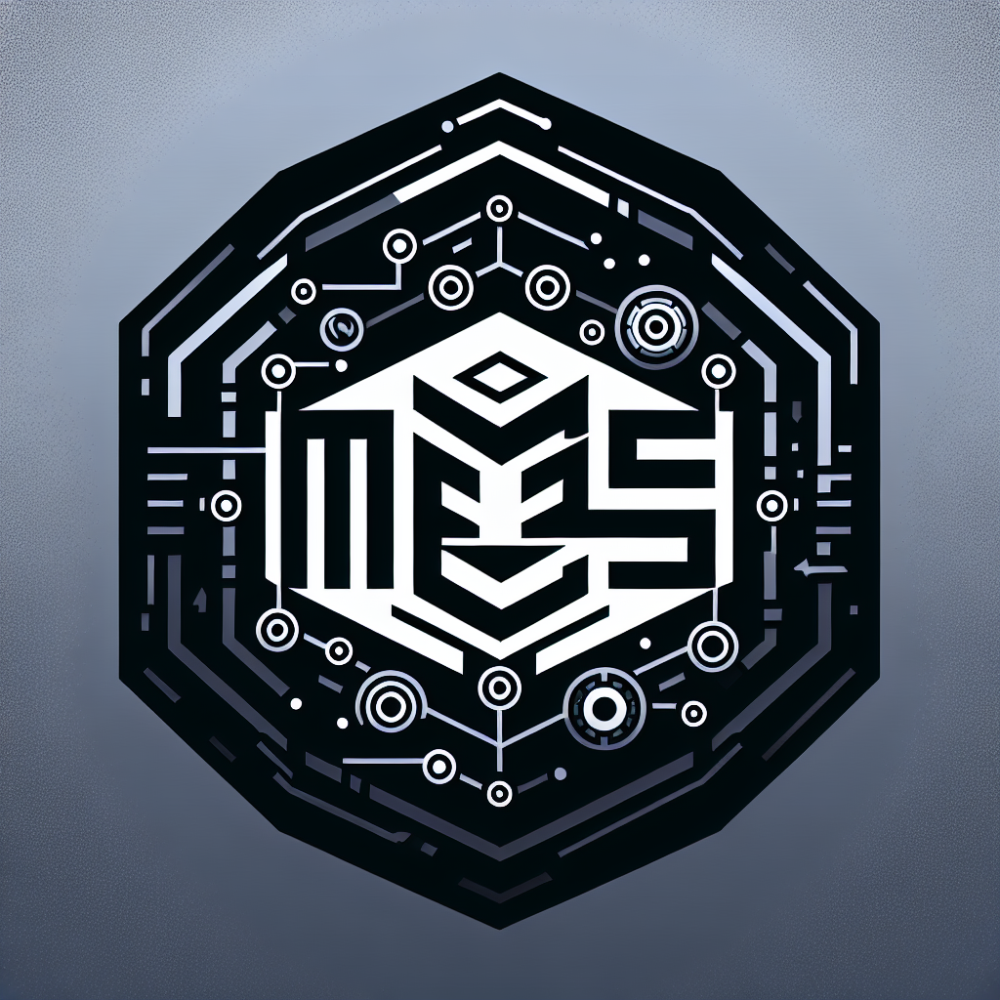

Let's Get Started!

在如今人工智慧快速發展的時代，該如何將其變成我們最得力的助手呢?
在這個專案裡我們的目標是將PDF檔案匯入經訓練過後的大型語言模型，讓您可以更方便的在各種不同場域使用針對各項特定任務的大型語言模型。
而為了解決資訊安全的問題，我們建構了一個本地端的伺服器來承接訓練完成的模型，讓您可以不用擔心資料會因為網路的連線而洩漏出去。
希望這個專案能夠幫助到您~~
-------------------------------------------------------------------------------------------------------------

為何選擇大型語言模型(Large Language Model)?
1. LLM能夠自動處理和解釋大量的非結構化數據，例如:維修記錄、生產報告和品質控制文件。這不僅提升了數據處理的速度和準確性，還使管理人員能夠及時獲得有用的資訊，從而更快地做出基於數據的決策。
2. 訓練有素的LLM可以為操作員提供交互式培訓，通過模擬的對話交流來傳達複雜的技術知識，比起傳統的培訓手段更加直接和個性化。這種方式不僅提高了培訓效率還增進了員工的學習體驗，進而提升其工作表現。
3. LLM的進階應用非常廣泛，例如可以通過分析歷史維修數據和實時表現數據來預測設備失效的預測性維護，這有助於減少意外停機時間並節省昂貴的維修成本。
綜上所述，大型語言模型的引入將有助於企業在保障生產高效性的同時，進一步提升創新能力和市場競爭力。